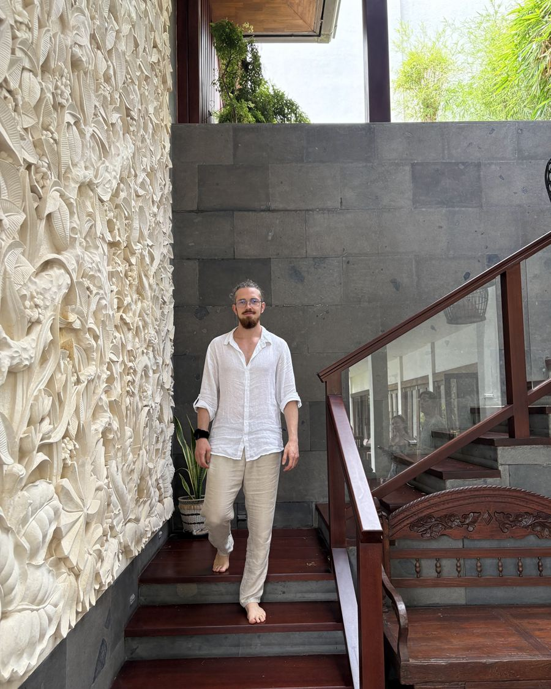
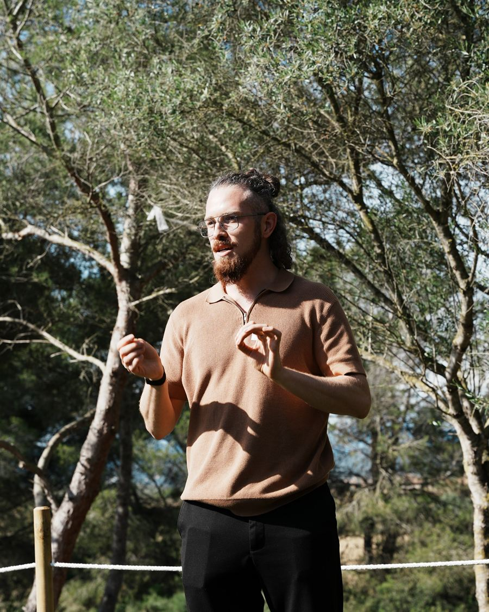

Früher
Kleinmachen war mein Normalzustand.
Platzhalter: Verstecken, funktionieren, gegen das eigene Gefühl anarbeiten — hier erzählst du, wie es war.
Kein Guru, kein Therapeut. Einer, der Scham von innen kennt — und gelernt hat, wie man ihr begegnet.

Platzhalter: Verstecken, funktionieren, gegen das eigene Gefühl anarbeiten — hier erzählst du, wie es war.
Platzhalter: der Moment, in dem es gekippt ist — deine erste Session, dein erster Release.
Platzhalter: wie du heute lebst und arbeitest — und warum du nicht fertig bist, sondern den Weg kennst.
„Franz öffnet für mich einen sicheren Raum, in dem all das möglich wird.“
„Durch unsere Zusammenarbeit habe ich viel mehr Akzeptanz für mich selbst entwickelt.“
Hör, wie ich klinge.
Gespräche mit Franz auf Spotify ↗
„Deine Emotionen sind nicht das Problem — sondern deine Beziehung zu ihnen.“
Und die beginnt mit einem Gespräch: 30 Minuten, kostenlos.
Design-Vorschau
Hier läuft später dein Video — der Platz dafür steht schon.